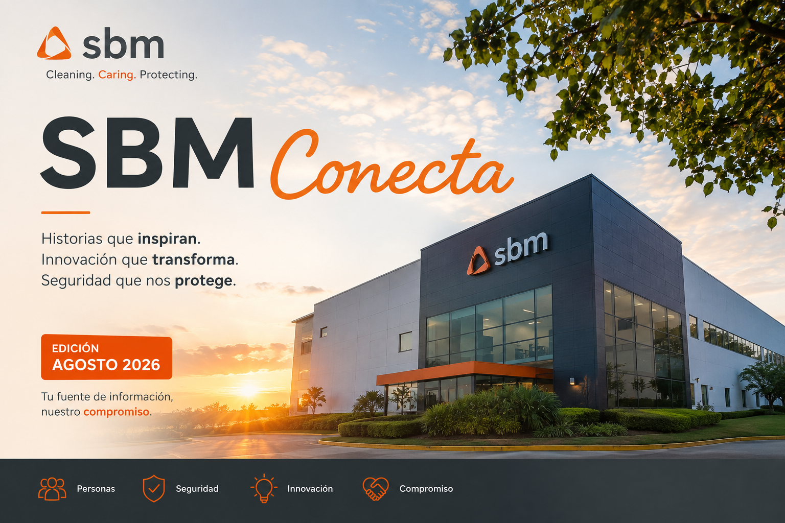

EHS / Seguridad
Reporte inmediato de accidentes
Así se gestiona un accidente laboral, desde el reporte inicial hasta el cierre y seguimiento.
Leer historia →
Seleccione una historia para abrirla como artículo completo.

Stefany, Pamela y Francis convierten pequeños detalles en grandes prevenciones.

Mayor visibilidad y control de acceso durante tareas de limpieza.
Información práctica, resultados y reconocimientos para cuidar a todo el equipo.
Conozca el flujo paso a paso y las responsabilidades para cerrar el evento a tiempo.
Abrir artículo →24 eventos registrados durante julio: RO 10, NWR 13, FA 0 y REC 1.
Ver estadísticas →Reconocimiento a quienes identificaron riesgos y ayudaron a prevenir incidentes.
Ver reconocimiento →Información para fortalecer el orden, la comunicación y el trabajo en equipo.

Puntualidad, avisos y comprobantes médicos.

Uso exclusivo laboral, resguardo y cuidado.

Respeto, comunicación y objetivos comunes.
Requerimientos que fortalecen la cultura de excelencia y mejora continua.
Expresar inquietudes y solicitar ayuda es parte de una cultura responsable.
Detenga el trabajo, informe y nunca manipule el producto del cliente.
Soluciones creadas desde la experiencia diaria para mejorar seguridad, durabilidad y eficiencia.
Una solución visible en puertas y accesos para advertir al personal y restringir el ingreso durante limpiezas.
Conocer la innovación →
Una estructura más resistente, adaptable y de bajo mantenimiento para el uso constante de la industria.
Conocer la innovación →Abra o descargue los comunicados oficiales en PDF.